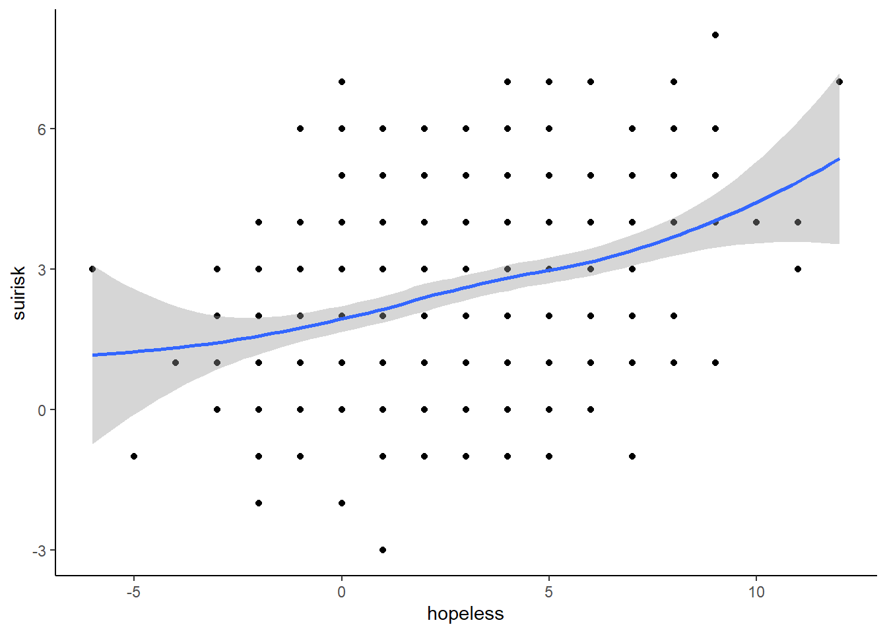
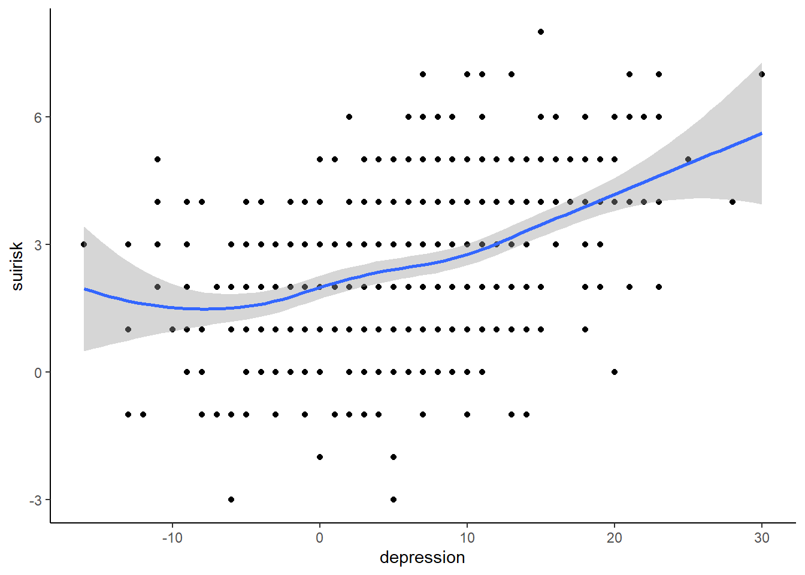
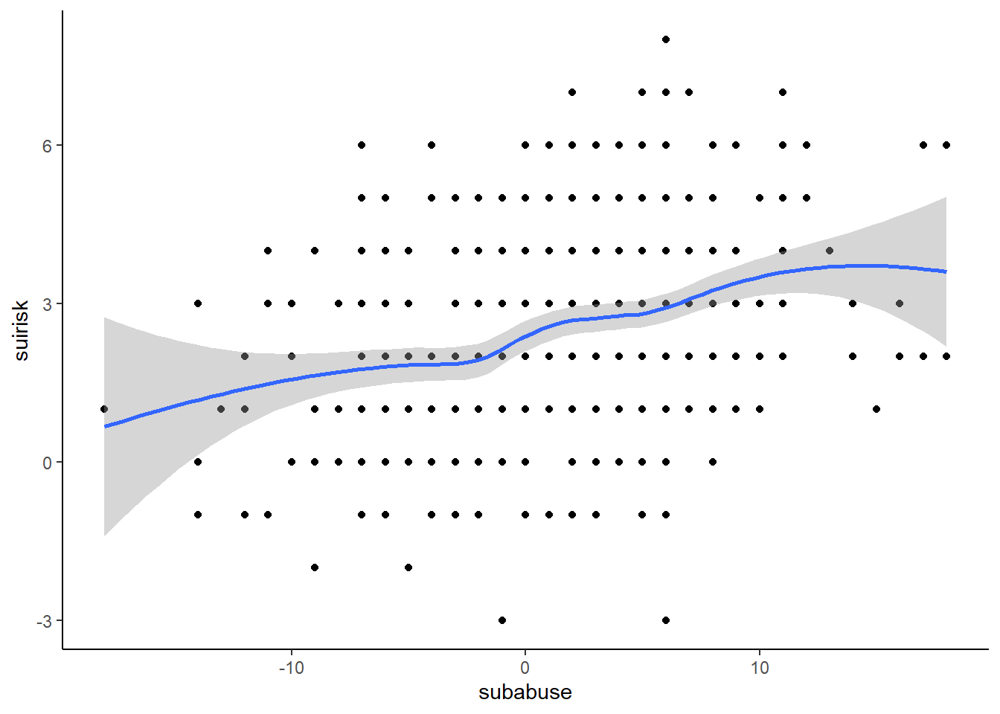
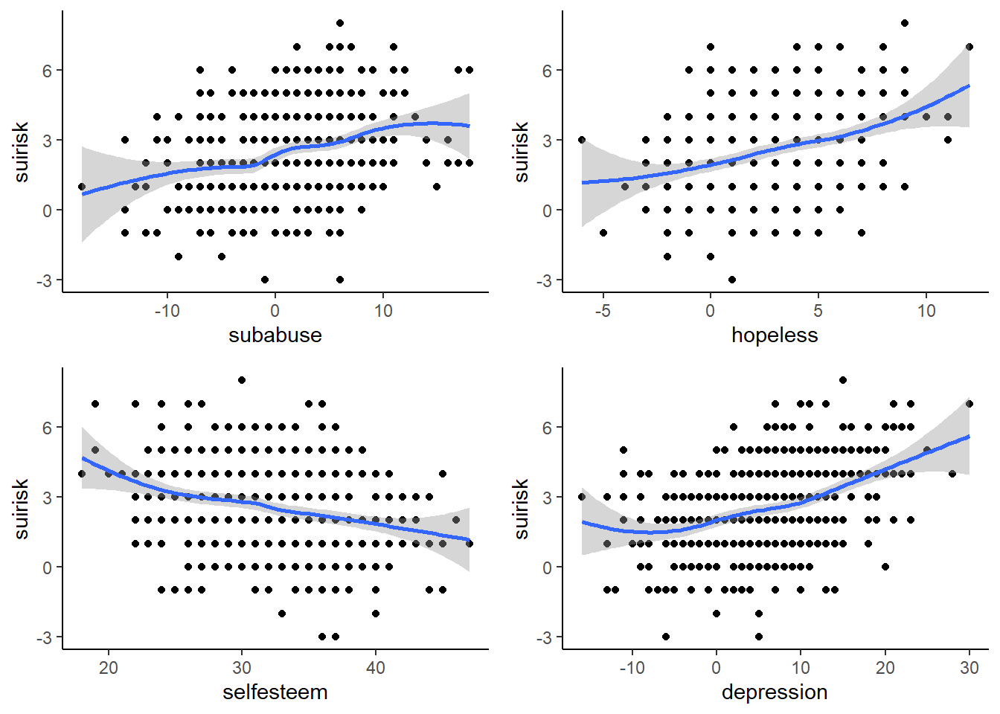

5.4 At-Home Exercises
In these exercise we will analyze the suicide_risk.rds dataset. These analyses are based on the following paper.
The suicide_risk.rds dataset was simulated from the covariance matrices presented on p.123 of the above paper. These data contain the following variables.
suirisk: A numeric variable representing suicide risksubabuse: A numeric variable representing severity of substance abusehopeless: A numeric variable representing degree of hopelessnessselfesteem: A numeric variable representing levels of self-esteemdepression: A numeric variable representing depression levelssex: A factor recording biological sex
We will use these data to investigate if sex moderates the effects of substance abuse, hopelessness, self-esteem, and depression on suicide risk.
5.4.1
Load the suicide_risk.rds dataset.
Click for explanation
suicide <- readRDS("suicide_risk.rds")5.4.2
Use ggplot() to visualize the bivariate relations between the four continuous
predictors and suicide risk.
- Based on these figures, do you think a linear relation between suicide risk and the four continuous predictors is reasonable?
Click for explanation
library(ggplot2)
## Create the basic plots for each predictor:
p1 <- ggplot(suicide, aes(x = subabuse, y = suirisk))
p2 <- ggplot(suicide, aes(x = hopeless, y = suirisk))
p3 <- ggplot(suicide, aes(x = selfesteem, y = suirisk))
p4 <- ggplot(suicide, aes(x = depression, y = suirisk))
## Add the details and print:
p1 +
geom_point() + # Add the scatterplot points
geom_smooth() + # Add a smoothed trend
theme_classic() # Use a nicer theme
p2 + geom_point() + geom_smooth() + theme_classic()
p3 + geom_point() + geom_smooth() + theme_classic()
p4 + geom_point() + geom_smooth() + theme_classic()
We can also use the grid.arrange() function from the gridExtra package to
join these four plots into a single figure.
library(gridExtra)
grid.arrange(p1 + geom_point() + geom_smooth() + theme_classic(),
p2 + geom_point() + geom_smooth() + theme_classic(),
p3 + geom_point() + geom_smooth() + theme_classic(),
p4 + geom_point() + geom_smooth() + theme_classic(),
ncol = 2)
There does appear to be an association between each of the predictors and suicide risk. The trends don’t look perfectly linear, but they don’t look too systematically nonlinear either, so modeling these relationships as linear seems sensible.
5.4.3
Modify the scatterplots from above by coloring the points and trend lines
according to sex.
- Based on these figures, do you think sex may moderate (some of) these bivariate relations?
Click for explanation
In the ggplot() call, we simply need to define assign sex to the “colour”
aesthetic.
## Create the basic plots for each predictor:
p1 <- ggplot(suicide, aes(x = subabuse, y = suirisk, colour = sex))
p2 <- ggplot(suicide, aes(x = hopeless, y = suirisk, colour = sex))
p3 <- ggplot(suicide, aes(x = selfesteem, y = suirisk, colour = sex))
p4 <- ggplot(suicide, aes(x = depression, y = suirisk, colour = sex))
grid.arrange(p1 + geom_point() + geom_smooth() + theme_classic(),
p2 + geom_point() + geom_smooth() + theme_classic(),
p3 + geom_point() + geom_smooth() + theme_classic(),
p4 + geom_point() + geom_smooth() + theme_classic(),
ncol = 2)
Of all the predictors, it looks like substance abuse shows the greatest differences between the male and female trends. The other three predictors demonstrate pretty similar effects for both sexes.
To test moderation, we need to include interactions (i.e., product terms)
between the moderator variable(s) and the focal predictor(s) on the RHS of our
regression equation. If we’re using the lm() function to estimate our models
via OLS regression, we need only specify the appropriate product terms in the
model syntax.
5.4.4
Use the lm() function to test the moderating influence of sex on the four
focal effects with OLS regression.
- Does sex significantly moderate the four focal effects?
Hint: To specify an interaction, simply “multiply” the variable names for the
moderator and focal predictor using the * symbol in the formula syntax.
- E.g.,
y ~ x * z
Click for explanation
out <- lm(suirisk ~ sex * subabuse + sex * hopeless + sex * selfesteem + sex * depression,
data = suicide)
summary(out)##
## Call:
## lm(formula = suirisk ~ sex * subabuse + sex * hopeless + sex *
## selfesteem + sex * depression, data = suicide)
##
## Residuals:
## Min 1Q Median 3Q Max
## -5.9171 -1.1597 0.0047 1.1552 4.1531
##
## Coefficients:
## Estimate Std. Error t value Pr(>|t|)
## (Intercept) 1.9862150 0.8119207 2.446 0.01477 *
## sexmale -0.8688675 1.4350193 -0.605 0.54513
## subabuse 0.0587404 0.0149445 3.931 9.64e-05 ***
## hopeless 0.0452029 0.0444629 1.017 0.30980
## selfesteem -0.0001569 0.0230584 -0.007 0.99458
## depression 0.0502616 0.0157588 3.189 0.00151 **
## sexmale:subabuse 0.0631559 0.0489630 1.290 0.19768
## sexmale:hopeless -0.0116150 0.0787379 -0.148 0.88278
## sexmale:selfesteem 0.0128741 0.0388335 0.332 0.74039
## sexmale:depression 0.0651349 0.0284552 2.289 0.02248 *
## ---
## Signif. codes: 0 '***' 0.001 '**' 0.01 '*' 0.05 '.' 0.1 ' ' 1
##
## Residual standard error: 1.62 on 511 degrees of freedom
## Multiple R-squared: 0.2208, Adjusted R-squared: 0.2071
## F-statistic: 16.09 on 9 and 511 DF, p-value: < 2.2e-16It doesn’t look like sex has too much affect. Only the effect of depression on suicide risk was significantly moderated by sex (\(\beta = 0.065\), \(t[511] = 2.29\), \(p = 0.022\))
Of course, we can do an analogous analysis via path modeling in lavaan. Unfortunately, lavaan will not (yet) dummy code our factors, so we need to manually create a dummy coded version of sex.
5.4.5
Dummy code the sex factor.
Click for explanation
You have seen several ways of doing this in previous practicals. Here, I’ll use
the quick-and-dirty ifelse() approach.
suicide$female <- ifelse(suicide$sex == "female", 1, 0)5.4.6
Define the lavaan model syntax for the same moderated regression model you estimated in 5.4.4.
Hints:
- To define an interaction term in lavaan syntax, use the
:operator instead of*. - You will need to explicitly include the variable names for the individual predictors (as well as the interaction terms) in the model syntax.
Click for explanation
mod <- '
suirisk ~ subabuse + hopeless + selfesteem + depression + female
suirisk ~ female:subabuse + female:hopeless + female:selfesteem + female:depression
'Note that I’ve broken the formula definition into two lines. Doing so has no effect on the model’s specification or estimation but keeps the syntax a bit tidier (by keeping the lines from getting too long).
5.4.7
Use lavaan::sem() to estimate the above model.
- What are your conclusions vis-à-vis the moderating influence of sex?
- Do these results differ from those of the OLS regression?
- What proportion of the variability in suicide risk is explained by this model?
Click for explanation
library(lavaan)
out <- sem(mod, data = suicide)
summary(out, rsquare = TRUE)## lavaan 0.6-12 ended normally after 1 iterations
##
## Estimator ML
## Optimization method NLMINB
## Number of model parameters 10
##
## Number of observations 521
##
## Model Test User Model:
##
## Test statistic 0.000
## Degrees of freedom 0
##
## Parameter Estimates:
##
## Standard errors Standard
## Information Expected
## Information saturated (h1) model Structured
##
## Regressions:
## Estimate Std.Err z-value P(>|z|)
## suirisk ~
## subabuse 0.122 0.046 2.640 0.008
## hopeless 0.034 0.064 0.522 0.602
## selfesteem 0.013 0.031 0.411 0.681
## depression 0.115 0.023 4.918 0.000
## female 0.869 1.421 0.611 0.541
## female:subabus -0.063 0.048 -1.302 0.193
## female:hopelss 0.012 0.078 0.149 0.882
## female:selfstm -0.013 0.038 -0.335 0.738
## female:deprssn -0.065 0.028 -2.311 0.021
##
## Variances:
## Estimate Std.Err z-value P(>|z|)
## .suirisk 2.575 0.160 16.140 0.000
##
## R-Square:
## Estimate
## suirisk 0.221- The path analysis gives the same results as the OLS regression. So, the conclusions are also the same.
- The model explains 22.08% of the variability in suicide risk.
Based on the results above, it looks like sex does not have much moderating influence. If we are trying to build a statistical model of suicide risk, we may question if the overall moderating effect of sex really improves the model.
We may also want to evaluate the significance of the focal effects, themselves. In the moderated model, the estimates for the focal predictors are conditional effects, not ordinary partial regression weights. In this particular case, these conditional effects represent the effect of each focal predictor on the outcome for males (i.e., the reference group of the moderator).
If we simply want to know if these focal predictors significantly affect suicide risk, without conditioning on sex, we need to estimate a restricted model containing no moderation (i.e., the additive model with all the same predictors but no interactions).
5.4.8
Specify the lavaan model syntax for the restricted model described above.
Click for explanation
mod <- '
suirisk ~ subabuse + hopeless + selfesteem + depression + female
'5.4.9
Use lavaan::sem() to estimate the above model.
- Are the focal predictors significantly associated with suicide risk?
- Is sex significantly associated with suicide risk?
- How much variability in suicide risk is explained by these predictors?
Click for explanation
out_res <- sem(mod, data = suicide)
summary(out_res, rsquare = TRUE)## lavaan 0.6-12 ended normally after 1 iterations
##
## Estimator ML
## Optimization method NLMINB
## Number of model parameters 6
##
## Number of observations 521
##
## Model Test User Model:
##
## Test statistic 0.000
## Degrees of freedom 0
##
## Parameter Estimates:
##
## Standard errors Standard
## Information Expected
## Information saturated (h1) model Structured
##
## Regressions:
## Estimate Std.Err z-value P(>|z|)
## suirisk ~
## subabuse 0.058 0.014 4.093 0.000
## hopeless 0.046 0.037 1.254 0.210
## selfesteem -0.004 0.018 -0.211 0.833
## depression 0.072 0.013 5.508 0.000
## female -0.133 0.154 -0.862 0.389
##
## Variances:
## Estimate Std.Err z-value P(>|z|)
## .suirisk 2.636 0.163 16.140 0.000
##
## R-Square:
## Estimate
## suirisk 0.202- Only substance abuse (\(\beta = 0.058\), \(z = 4.09\), \(p < 0.001\)) and depression (\(\beta = 0.072\), \(z = 5.51\), \(p < 0.001\)) are significant predictors of suicide risk.
- No, sex is not a significant predictor of suicide risk (\(\beta = -0.133\), \(z = -0.86\), \(p = 0.389\)).
- These five predictors explain 20.23% of the variability in suicide risk.
5.4.10
Compare the full model (including interactions) and the restricted model (without interactions).
- How much additional variability in suicide risk do we explain by including the four interaction terms?
- Can we conduct a \(\Delta \chi^2\) test to compare these two models?
- If you think so, conduct the test and interpret the results.
- If you do not think so, explain why not.
Click for explanation
To see how much additional variability we explain, we simply subtract the \(R^2\) for the restricted model from the \(R^2\) for the full model.
- Adding the interaction terms explains 1.85% more variability in suicide risk.
Unfortunately, we cannot use a \(\Delta \chi^2\) test to compare these models because they are both saturated (hence, they both have perfect fit). Also, these models are not nested because we added four new variables (hence, added four new columns and rows to the covariance matrix) when adding the interaction terms.
- If we want, we can manually implement a \(\Delta R^2\) test analogous to what we would do in OLS regression, but doing so is a bit of a faff.
## Extract the residual variance:
eF <- lavInspect(out, "theta")["suirisk", "suirisk"]
eR <- lavInspect(out_res, "theta")["suirisk", "suirisk"]
## Compute the residual DF:
n <- lavInspect(out, "nobs")
dfF <- n - fitMeasures(out, "npar")
dfR <- n - fitMeasures(out_res, "npar")
## Compute the F statistic for the R^2 difference:
(f <- ((eR - eF) / (dfR - dfF)) / (eF / dfF))## npar
## 3.027## Compute the p-value by comparing to an F-distribution
(p <- pf(f, dfR - dfF, dfF, lower.tail = FALSE))## npar
## 0.017The F-statistic for the \(\Delta R^2\) test is significant (\(\Delta R^2 = 0.018\), \(F[4, 511] = 3.03\), \(p = 0.017\)), so we can say that including the moderating influence of sex explains significantly more variability in suicide risk. Of course, you could certainly question if an additional 1.85% of variance explained is a meaningful increase. Regardless of how you judge the increase in explained variance, though, we cannot necessarily say that adding the interaction terms produces a “better” model. Both models perfectly recreate the observed data; they are statistically equivalent representations of the phenomenon.
End of At-Home Exercises